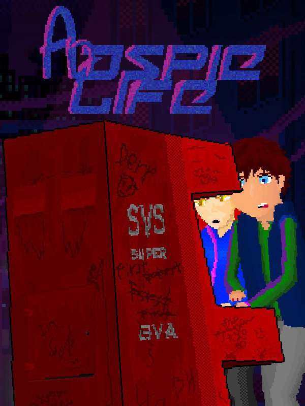

An Aspie Life
An Aspie Life
Details
|  | |
| Playtime | Not Played |
| Last Activity | Never |
| Added | 17/04/2020 |
| Modified | Never |
| Completion Status | Not Played |
| Source | Steam |
| Platform | PC |
| Release Date | 29/03/2018 |
| Community Score | 65 |
| Critic Score | |
| User Score | |
| Genre | Adventure Casual Free to Play Indie Simulation |
| Developer | Bradley Hennessey Joe Watson |
| Publisher | EnderLost Studios |
| Feature | Achievements Single Player |
| Links | PCGamingWiki Community Hub Discussions Guides Achievements Store Page News |
Description

“We are all human” – You...
Note – This is a personal game, created from my own personal experiences of living with Asperger Syndrome. I was 16 when I started making An Aspie Life and as of now, I’m 17 years old and about to start University. Everyone with autism is a little different. I did not create the game to be offensive in anyway, only trying to explain what it is like to live with, from my point of view.
(WARNING: This game has imagery that potentially can trigger seizures for players with photosensitive epilepsy)
About
One day your roommate Leaves for no reason. You’re left to face the outside world alone, but this can be both difficult and amazing when you have autism. Just because you have it, doesn’t mean you can’t enjoy life. Some things can be harder to do, but you can do some incredible things as well. It just makes even the mundane parts of life, can be an experience.
"An Aspie Life" is an experimental adventure game that deals with the topic of Asperger's Syndrome. The game is centered around having to live with autism. The player's actions in the game will have to adapt to how an autistic person sees the world. As every element of this game recreates how some people with autism perceive the world, therefore all forms of sound, graphics, and interactions are intentional.

"Video games can be entertaining and educational. When these two qualities are combined, the player not only enjoys being informed, they are also more likely to remember the key themes of the game. ‘An Aspie Life’ is a video game that explores autism through the life experiences of the central character and playing a video game can be more enjoyable and informative than reading literature and watching documentaries" - Tony Attwood
How it represents parts of Asperger's Syndrome.
- There’s a lot going on in An Aspie life that is meant to make players feel like they are on the spectrum. It’s a little easier in a list:
- All characters in An Aspie Life are black outlines. By doing this, players can’t read body language. Just like someone with autism.
- Some characters that the main character knows well, are not black outlines and have some detail. But they are still darkened. This represents how some with autism can learn someone’s body language if they have known them for a long time.
- In the game, every environmental sound gets represented on the sound sensitivity meter. The player must keep this under control, so the main character does not become overwhelmed. This represents Sound sensitivity in autism.
- In conversations, the player again can’t read body language, as they are all black outlines. But they must try and figure out how to respond with a limited vocabulary. This represents the difficulty Aspies have in putting thoughts into sentences that people can understand.
- Also in conversations, the player’s feeling meters of stress, happiness, courage, and uneasiness will affect how a conversation plays out. For example, not much courage means you can’t look at the other person.
- To regenerate the feeling meter, players must go into quiet places or do things that the main character enjoys. That being, playing video games.
- The game’s art style of blue and purple, represent not just the 80/90s feel of the game but also social isolation. Some items in the game that hold great importance to the main character are not in blue/purple but are in full color, because of how important they are.